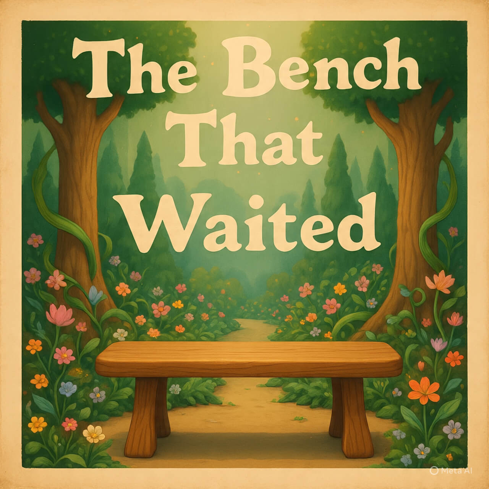

🪑 Le Banc qui Attendait

Dans un parc presque oublié, il y avait un vieux banc en bois. Il grinçait un peu, se décolorait lentement, mais il tenait bon. Il avait vu des amoureux se tenir la main. Des enfants manger des glaces. Des anciens raconter des histoires. Puis un jour… plus personne. Les gens passaient, mais ne s'arrêtaient plus. Le banc attendait. Un matin, une petite fille s'assit. Elle posa une poupée sur l'accoudoir et lui dit : — Tu sais, il paraît que les bancs ont des secrets. Elle ne resta que quelques minutes. Mais quand elle partit, le banc sembla un peu plus droit. Depuis ce jour, chaque semaine, la fillette revint. Et le banc sut que même l'attente pouvait fleurir à nouveau. Fin.